Graph Plotting¶
(For LaTeX drawings of graphs, see the graph_latex module.)
All graphs have an associated Sage graphics object, which you can display:
sage: G = graphs.WheelGraph(15)
sage: P = G.plot()
sage: P.show() # long time
If you create a graph in Sage using the Graph command, then plot that graph,
the positioning of nodes is determined using the spring-layout algorithm. For
the special graph constructors, which you get using graphs.[tab], the
positions are preset. For example, consider the Petersen graph with default node
positioning vs. the Petersen graph constructed by this database:
sage: petersen_spring = Graph(':I`ES@obGkqegW~')
sage: petersen_spring.show() # long time
sage: petersen_database = graphs.PetersenGraph()
sage: petersen_database.show() # long time
For all the constructors in this database (except some random graphs), the position dictionary is filled in, instead of using the spring-layout algorithm.
Plot options
Here is the list of options accepted by
plot() and the constructor of
GraphPlot. Those two functions also accept all options of
sage.plot.graphics.Graphics.show().
partition |
A partition of the vertex set. If specified, plot will show each cell in a different color. vertex_colors takes precedence. |
dist |
The distance between multiedges. |
vertex_labels |
Whether or not to draw vertex labels. |
edge_color |
The default color for edges not listed in edge_colors. |
spring |
Use spring layout to finalize the current layout. |
pos |
The position dictionary of vertices |
loop_size |
The radius of the smallest loop. |
color_by_label |
Whether to color the edges according to their labels. This also accepts a function or dictionary mapping labels to colors. |
iterations |
The number of times to execute the spring layout algorithm. |
talk |
Whether to display the vertices in talk mode (larger and white). |
edge_labels |
Whether or not to draw edge labels. |
vertex_size |
The size to draw the vertices. |
edge_thickness |
The thickness of the edges. |
dim |
The dimension of the layout – 2 or 3. |
edge_style |
The linestyle of the edges. It should be one of “solid”, “dashed”, “dotted”, dashdot”, or “-“, “–”, “:”, “-.”, respectively. |
layout |
A layout algorithm – one of : “acyclic”, “circular” (plots the graph with vertices evenly distributed on a circle), “ranked”, “graphviz”, “planar”, “spring” (traditional spring layout, using the graph’s current positions as initial positions), or “tree” (the tree will be plotted in levels, depending on minimum distance for the root). |
vertex_shape |
The shape to draw the vertices. Currently unavailable for Multi-edged DiGraphs. |
vertex_colors |
Dictionary of vertex coloring : each key is a color recognizable by matplotlib, and each corresponding entry is a list of vertices. |
by_component |
Whether to do the spring layout by connected component – a boolean. |
heights |
A dictionary mapping heights to the list of vertices at this height. |
graph_border |
Whether or not to draw a frame around the graph. |
max_dist |
The max distance range to allow multiedges. |
prog |
Which graphviz layout program to use – one of “circo”, “dot”, “fdp”, “neato”, or “twopi”. |
edge_colors |
a dictionary specifying edge colors: each key is a color recognized by matplotlib, and each entry is a list of edges. |
vertex_color |
Default color for vertices not listed in vertex_colors dictionary. |
tree_orientation |
The direction of tree branches – ‘up’, ‘down’, ‘left’ or ‘right’. |
save_pos |
Whether or not to save the computed position for the graph. |
tree_root |
A vertex designation for drawing trees. A vertex of the tree to be used as the root for the layout='tree' option. If no root is specified, then one is chosen close to the center of the tree. Ignored unless layout='tree' |
edge_labels_background |
The color of the background of the edge labels |
Default options
This module defines two dictionaries containing default options for the
plot() and
show() methods. These two dictionaries are
sage.graphs.graph_plot.DEFAULT_PLOT_OPTIONS and
sage.graphs.graph_plot.DEFAULT_SHOW_OPTIONS, respectively.
Obviously, these values are overruled when arguments are given explicitly.
Here is how to define the default size of a graph drawing to be [6,6]. The
first two calls to show() use this
option, while the third does not (a value for figsize is explicitly given):
sage: import sage.graphs.graph_plot
sage: sage.graphs.graph_plot.DEFAULT_SHOW_OPTIONS['figsize'] = [6,6]
sage: graphs.PetersenGraph().show() # long time
sage: graphs.ChvatalGraph().show() # long time
sage: graphs.PetersenGraph().show(figsize=[4,4]) # long time
We can now reset the default to its initial value, and now display graphs as previously:
sage: sage.graphs.graph_plot.DEFAULT_SHOW_OPTIONS['figsize'] = [4,4]
sage: graphs.PetersenGraph().show() # long time
sage: graphs.ChvatalGraph().show() # long time
Note
While
DEFAULT_PLOT_OPTIONSaffects bothG.show()andG.plot(), settings fromDEFAULT_SHOW_OPTIONSonly affectsG.show().In order to define a default value permanently, you can add a couple of lines to Sage’s startup scripts. Example
sage: import sage.graphs.graph_plot sage: sage.graphs.graph_plot.DEFAULT_SHOW_OPTIONS['figsize'] = [4,4]
Index of methods and functions
GraphPlot.set_pos() |
Sets the position plotting parameters for this GraphPlot. |
GraphPlot.set_vertices() |
Sets the vertex plotting parameters for this GraphPlot. |
GraphPlot.set_edges() |
Sets the edge (or arrow) plotting parameters for the GraphPlot object. |
GraphPlot.show() |
Shows the (Di)Graph associated with this GraphPlot object. |
GraphPlot.plot() |
Returns a graphics object representing the (di)graph. |
GraphPlot.layout_tree() |
Compute a nice layout of a tree. |
-
class
sage.graphs.graph_plot.GraphPlot(graph, options)¶ Bases:
sage.structure.sage_object.SageObjectReturns a
GraphPlotobject, which stores all the parameters needed for plotting (Di)Graphs. AGraphPlothas a plot and show function, as well as some functions to set parameters for vertices and edges. This constructor assumes default options are set. Defaults are shown in the example below.EXAMPLES:
sage: from sage.graphs.graph_plot import GraphPlot sage: options = { ....: 'vertex_size':200, ....: 'vertex_labels':True, ....: 'layout':None, ....: 'edge_style':'solid', ....: 'edge_color':'black', ....: 'edge_colors':None, ....: 'edge_labels':False, ....: 'iterations':50, ....: 'tree_orientation':'down', ....: 'heights':None, ....: 'graph_border':False, ....: 'talk':False, ....: 'color_by_label':False, ....: 'partition':None, ....: 'dist':.075, ....: 'max_dist':1.5, ....: 'loop_size':.075, ....: 'edge_labels_background':'transparent'} sage: g = Graph({0:[1,2], 2:[3], 4:[0,1]}) sage: GP = GraphPlot(g, options)
-
layout_tree(root, orientation)¶ Compute a nice layout of a tree.
INPUT:
root– the root vertex.orientation– Whether to place the root at the top or at the bottom :orientation="down"– children are placed below their parentorientation="top"– children are placed above their parent
EXAMPLES:
sage: T = graphs.RandomLobster(25,0.3,0.3) sage: T.show(layout='tree',tree_orientation='up') # indirect doctest sage: from sage.graphs.graph_plot import GraphPlot sage: G = graphs.HoffmanSingletonGraph() sage: T = Graph() sage: T.add_edges(G.min_spanning_tree(starting_vertex=0)) sage: T.show(layout='tree',tree_root=0) # indirect doctest
-
plot(**kwds)¶ Returns a graphics object representing the (di)graph.
INPUT:
The options accepted by this method are to be found in the documentation of the
sage.graphs.graph_plotmodule, and theshow()method.Note
See
the module's documentationfor information on default values of this method.We can specify some pretty precise plotting of familiar graphs:
sage: from math import sin, cos, pi sage: P = graphs.PetersenGraph() sage: d = {'#FF0000':[0,5], '#FF9900':[1,6], '#FFFF00':[2,7], '#00FF00':[3,8], ....: '#0000FF':[4,9]} sage: pos_dict = {} sage: for i in range(5): ....: x = float(cos(pi/2 + ((2*pi)/5)*i)) ....: y = float(sin(pi/2 + ((2*pi)/5)*i)) ....: pos_dict[i] = [x,y] ... sage: for i in range(5,10): ....: x = float(0.5*cos(pi/2 + ((2*pi)/5)*i)) ....: y = float(0.5*sin(pi/2 + ((2*pi)/5)*i)) ....: pos_dict[i] = [x,y] ... sage: pl = P.graphplot(pos=pos_dict, vertex_colors=d) sage: pl.show()
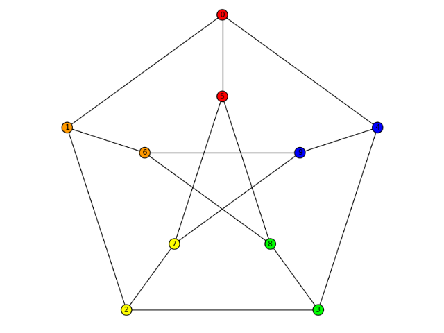Here are some more common graphs with typical options:
sage: C = graphs.CubeGraph(8) sage: P = C.graphplot(vertex_labels=False, vertex_size=0, graph_border=True) sage: P.show()
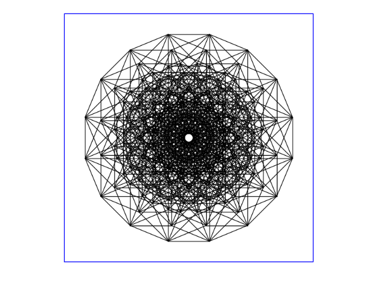sage: G = graphs.HeawoodGraph().copy(sparse=True) sage: for u,v,l in G.edges(): ....: G.set_edge_label(u,v,'(' + str(u) + ',' + str(v) + ')') sage: G.graphplot(edge_labels=True).show()

The options for plotting also work with directed graphs:
sage: D = DiGraph( { 0: [1, 10, 19], 1: [8, 2], 2: [3, 6], 3: [19, 4], ....: 4: [17, 5], 5: [6, 15], 6: [7], 7: [8, 14], 8: [9], 9: [10, 13], ....: 10: [11], 11: [12, 18], 12: [16, 13], 13: [14], 14: [15], 15: [16], ....: 16: [17], 17: [18], 18: [19], 19: []}) sage: for u,v,l in D.edges(): ....: D.set_edge_label(u,v,'(' + str(u) + ',' + str(v) + ')') sage: D.graphplot(edge_labels=True, layout='circular').show()

This example shows off the coloring of edges:
sage: from sage.plot.colors import rainbow sage: C = graphs.CubeGraph(5) sage: R = rainbow(5) sage: edge_colors = {} sage: for i in range(5): ....: edge_colors[R[i]] = [] sage: for u,v,l in C.edges(): ....: for i in range(5): ....: if u[i] != v[i]: ....: edge_colors[R[i]].append((u,v,l)) sage: C.graphplot(vertex_labels=False, vertex_size=0, edge_colors=edge_colors).show()
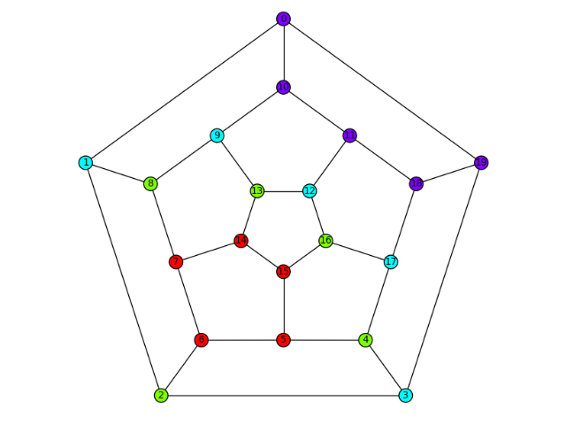With the
partitionoption, we can separate out same-color groups of vertices:sage: D = graphs.DodecahedralGraph() sage: Pi = [[6,5,15,14,7],[16,13,8,2,4],[12,17,9,3,1],[0,19,18,10,11]] sage: D.show(partition=Pi)
Loops are also plotted correctly:
sage: G = graphs.PetersenGraph() sage: G.allow_loops(True) sage: G.add_edge(0,0) sage: G.show()
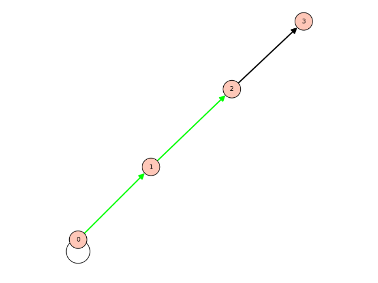sage: D = DiGraph({0:[0,1], 1:[2], 2:[3]}, loops=True) sage: D.show() sage: D.show(edge_colors={(0,1,0):[(0,1,None),(1,2,None)],(0,0,0):[(2,3,None)]})
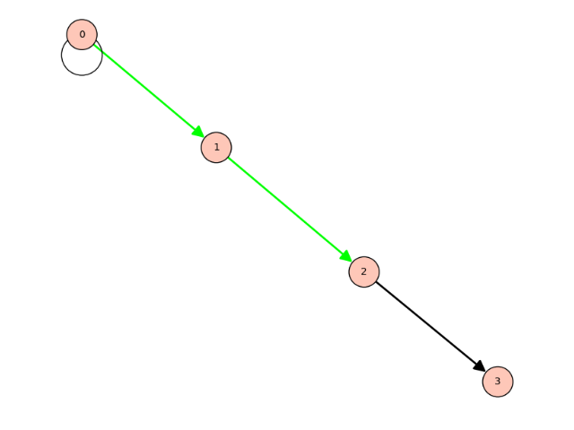More options:
sage: pos = {0:[0.0, 1.5], 1:[-0.8, 0.3], 2:[-0.6, -0.8], ....: 3:[0.6, -0.8], 4:[0.8, 0.3]} sage: g = Graph({0:[1], 1:[2], 2:[3], 3:[4], 4:[0]}) sage: g.graphplot(pos=pos, layout='spring', iterations=0).plot() Graphics object consisting of 11 graphics primitives
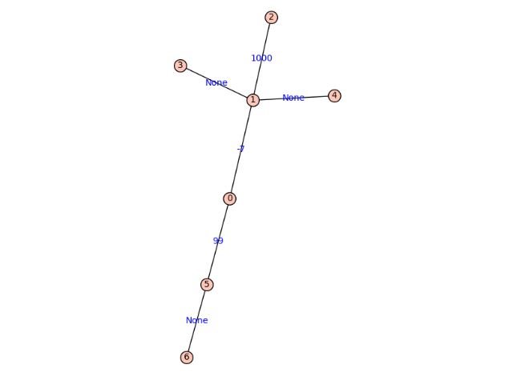sage: G = Graph() sage: P = G.graphplot().plot() sage: P.axes() False sage: G = DiGraph() sage: P = G.graphplot().plot() sage: P.axes() False
We can plot multiple graphs:
sage: T = list(graphs.trees(7)) sage: t = T[3] sage: t.graphplot(heights={0:[0], 1:[4,5,1], 2:[2], 3:[3,6]}).plot() Graphics object consisting of 14 graphics primitives
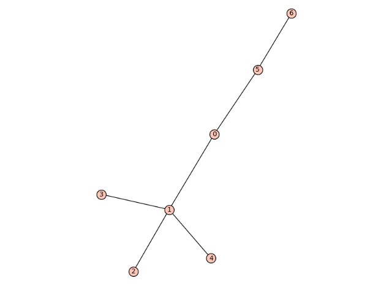sage: T = list(graphs.trees(7)) sage: t = T[3] sage: t.graphplot(heights={0:[0], 1:[4,5,1], 2:[2], 3:[3,6]}).plot() Graphics object consisting of 14 graphics primitives
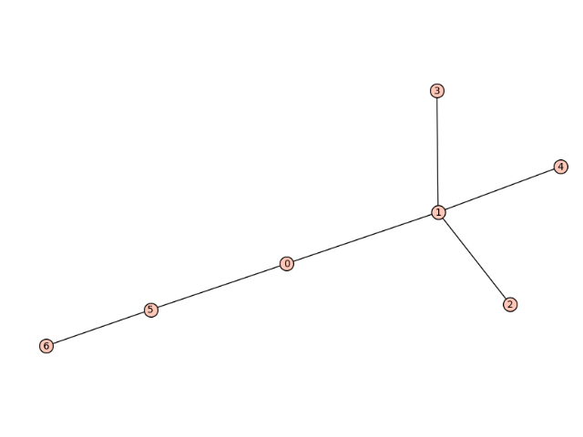sage: t.set_edge_label(0,1,-7) sage: t.set_edge_label(0,5,3) sage: t.set_edge_label(0,5,99) sage: t.set_edge_label(1,2,1000) sage: t.set_edge_label(3,2,'spam') sage: t.set_edge_label(2,6,3/2) sage: t.set_edge_label(0,4,66) sage: t.graphplot(heights={0:[0], 1:[4,5,1], 2:[2], 3:[3,6]}, edge_labels=True).plot() Graphics object consisting of 20 graphics primitives
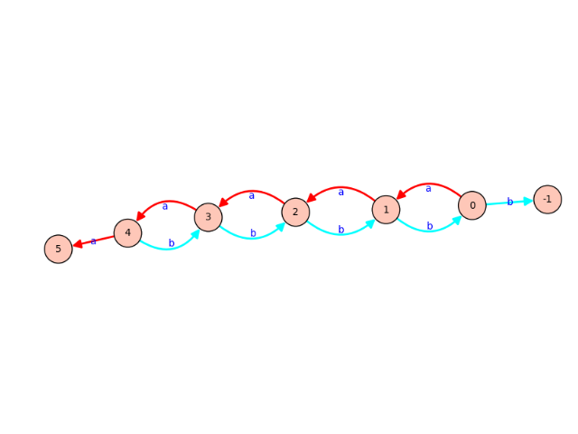sage: T = list(graphs.trees(7)) sage: t = T[3] sage: t.graphplot(layout='tree').show()
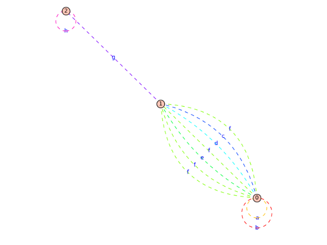The tree layout is also useful:
sage: t = DiGraph('JCC???@A??GO??CO??GO??') sage: t.graphplot(layout='tree', tree_root=0, tree_orientation="up").show()

More examples:
sage: D = DiGraph({0:[1,2,3], 2:[1,4], 3:[0]}) sage: D.graphplot().show()
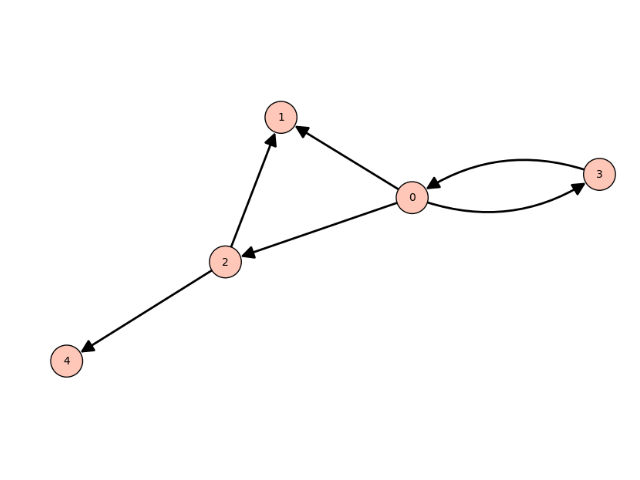sage: D = DiGraph(multiedges=True, sparse=True) sage: for i in range(5): ....: D.add_edge((i,i+1,'a')) ....: D.add_edge((i,i-1,'b')) sage: D.graphplot(edge_labels=True,edge_colors=D._color_by_label()).plot() Graphics object consisting of 34 graphics primitives
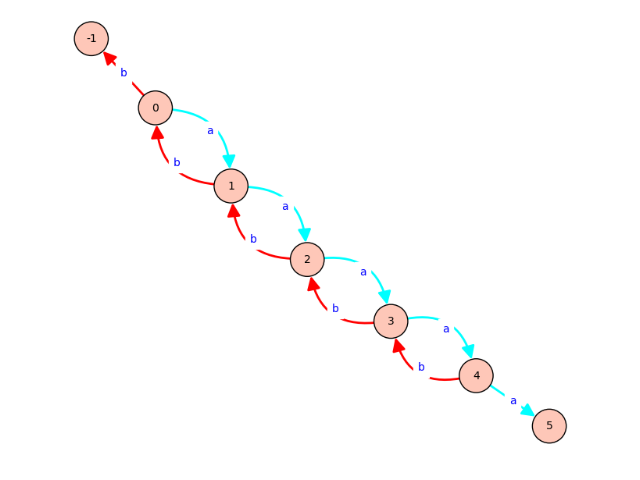sage: g = Graph({}, loops=True, multiedges=True, sparse=True) sage: g.add_edges([(0,0,'a'),(0,0,'b'),(0,1,'c'),(0,1,'d'), ....: (0,1,'e'),(0,1,'f'),(0,1,'f'),(2,1,'g'),(2,2,'h')]) sage: g.graphplot(edge_labels=True, color_by_label=True, edge_style='dashed').plot() Graphics object consisting of 26 graphics primitives
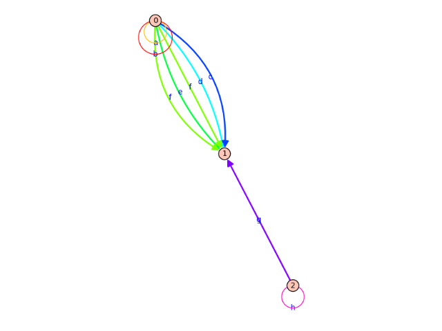The
edge_styleoption may be provided in the short format too:sage: g.graphplot(edge_labels=True, color_by_label=True, edge_style='--').plot() Graphics object consisting of 26 graphics primitives
-
set_edges(**edge_options)¶ Sets the edge (or arrow) plotting parameters for the
GraphPlotobject.This function is called by the constructor but can also be called to make updates to the vertex options of an existing
GraphPlotobject. Note that the changes are cumulative.EXAMPLES:
sage: g = Graph({}, loops=True, multiedges=True, sparse=True) sage: g.add_edges([(0,0,'a'),(0,0,'b'),(0,1,'c'),(0,1,'d'), ....: (0,1,'e'),(0,1,'f'),(0,1,'f'),(2,1,'g'),(2,2,'h')]) sage: GP = g.graphplot(vertex_size=100, edge_labels=True, color_by_label=True, ....: edge_style='dashed') sage: GP.set_edges(edge_style='solid') sage: GP.plot() Graphics object consisting of 26 graphics primitives
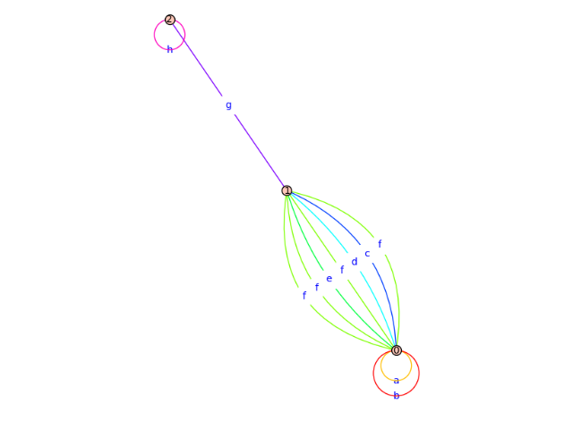sage: GP.set_edges(edge_color='black') sage: GP.plot() Graphics object consisting of 26 graphics primitives
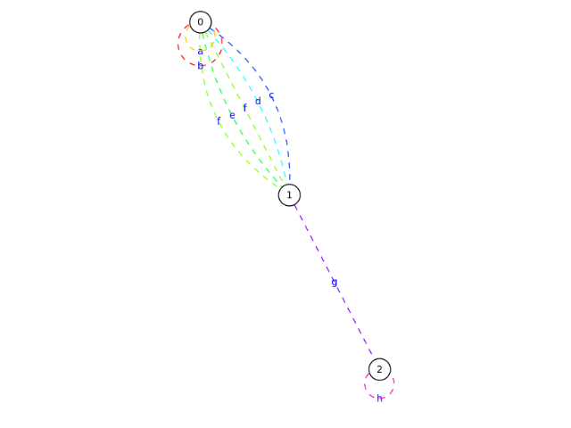sage: d = DiGraph({}, loops=True, multiedges=True, sparse=True) sage: d.add_edges([(0,0,'a'),(0,0,'b'),(0,1,'c'),(0,1,'d'), ....: (0,1,'e'),(0,1,'f'),(0,1,'f'),(2,1,'g'),(2,2,'h')]) sage: GP = d.graphplot(vertex_size=100, edge_labels=True, color_by_label=True, ....: edge_style='dashed') sage: GP.set_edges(edge_style='solid') sage: GP.plot() Graphics object consisting of 28 graphics primitives
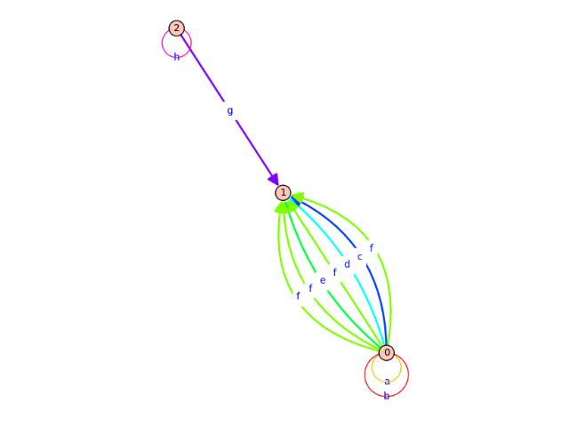sage: GP.set_edges(edge_color='black') sage: GP.plot() Graphics object consisting of 28 graphics primitives
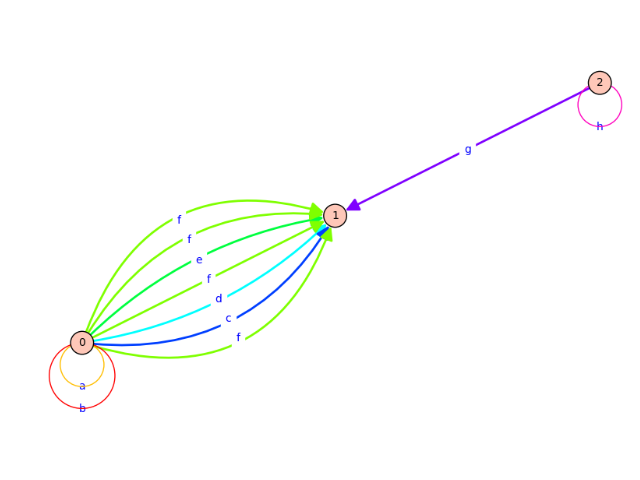
-
set_pos()¶ Sets the position plotting parameters for this GraphPlot.
EXAMPLES:
This function is called implicitly by the code below:
sage: g = Graph({0:[1,2], 2:[3], 4:[0,1]}) sage: g.graphplot(save_pos=True, layout='circular') # indirect doctest GraphPlot object for Graph on 5 vertices
The following illustrates the format of a position dictionary, but due to numerical noise we do not check the values themselves:
sage: g.get_pos() {0: (0.0, 1.0), 1: (-0.951..., 0.309...), 2: (-0.587..., -0.809...), 3: (0.587..., -0.809...), 4: (0.951..., 0.309...)}
sage: T = list(graphs.trees(7)) sage: t = T[3] sage: t.plot(heights={0:[0], 1:[4,5,1], 2:[2], 3:[3,6]}) Graphics object consisting of 14 graphics primitives
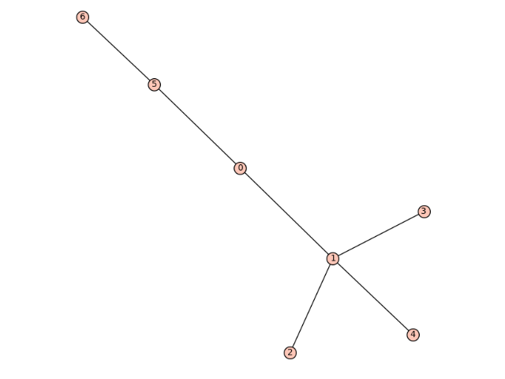
-
set_vertices(**vertex_options)¶ Sets the vertex plotting parameters for this
GraphPlot. This function is called by the constructor but can also be called to make updates to the vertex options of an existingGraphPlotobject. Note that the changes are cumulative.EXAMPLES:
sage: g = Graph({}, loops=True, multiedges=True, sparse=True) sage: g.add_edges([(0,0,'a'),(0,0,'b'),(0,1,'c'),(0,1,'d'), ....: (0,1,'e'),(0,1,'f'),(0,1,'f'),(2,1,'g'),(2,2,'h')]) sage: GP = g.graphplot(vertex_size=100, edge_labels=True, color_by_label=True, ....: edge_style='dashed') sage: GP.set_vertices(talk=True) sage: GP.plot() Graphics object consisting of 26 graphics primitives sage: GP.set_vertices(vertex_color='green', vertex_shape='^') sage: GP.plot() Graphics object consisting of 26 graphics primitives
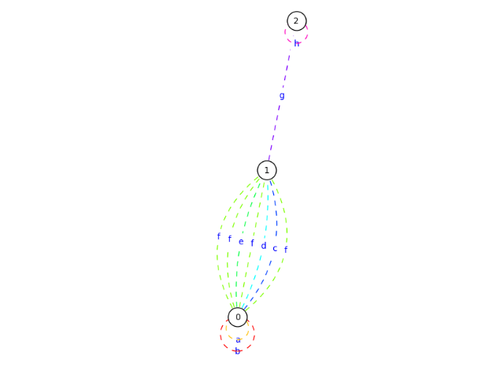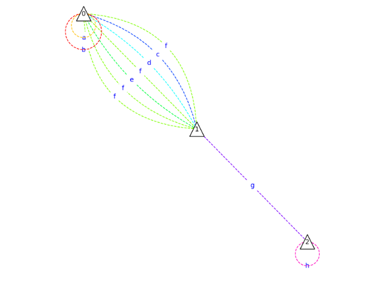
-
show(**kwds)¶ Shows the (Di)Graph associated with this
GraphPlotobject.INPUT:
This method accepts all parameters of
sage.plot.graphics.Graphics.show().Note
- See
the module's documentationfor information on default values of this method. - Any options not used by plot will be passed on to the
show()method.
EXAMPLES:
sage: C = graphs.CubeGraph(8) sage: P = C.graphplot(vertex_labels=False, vertex_size=0, graph_border=True) sage: P.show()

- See
-